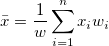

は
は 番目のサンプルです。
番目のサンプルです。
再計算オプションの詳細は、分析結果の再計算を参照してください。
入力ワークシートを指定します。入力データ範囲の指定について詳細は、こちらを参照してください。
各列で計算する値をそれぞれ指定します。 は 番目のサンプルです。
| N合計 |
Nで表されるデータポイントの総数 |
|---|---|
| 平均 |
平均（アベレージ）スコア .WEIGHT変数がない場合、式は |
| 標準偏差 |
ここで、 |
| 合計 |  .WEIGHT変数がない場合、式は .WEIGHT変数がない場合、式は になります。 になります。
|
| 最小 |
|
| 中央値 |
メディアンまたは第2 (50%)四分位、Q2です。計算方法については、分位数の補間を参照してください。 |
| 最大 |
|
パーセンタイルリスト は「90 95 99」固定のパーセンタイル値を表示します。
複数の識別子を、出力概要テーブルに挿入して、ソースデータセット情報を表示できます。ツールバー の、上へ移動
の、上へ移動 、下へ移動
、下へ移動 、削除
、削除 、すべて選択
、すべて選択 、選択
、選択 ボタンで識別子の追加や削除、順序変更が可能です。
ボタンで識別子の追加や削除、順序変更が可能です。
各識別子タイプは、概要ワークシートの列として追加されます。オプションは次のとおりです。
| 範囲 | 範囲シンタックスを使用します。 |
|---|---|
| ブック名 | ワークブックのロングネームを使用します。 |
| シート名 | ワークシート名を使用します。 |
| 名前 | 対応する列にロングネームがあれば、ロングネームを使用。ない場合はショートネームを使用。 |
| ショートネーム | 対応する列のショートネームを使用 |
| ロングネーム | 対応する列のロングネームを使用 |
レポートワークシートの出力先を指定します。
 になります。
になります。
^2/d}")

}\,")
}\,")